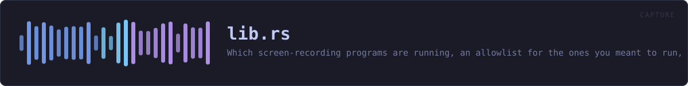

crates/veilvoice-capture/src/lib.rs
veilvoice-capture · 570 lines · read the source
Which screen-recording programs are running, an allowlist for the ones you meant to run, and a plain account of the two things this cannot do.
VeilVoice does not hide itself from your recorder
Stated first, because it is the question people actually have: you can record VeilVoice's window with OBS, and nothing here stops you. Screen capture of this application is not blocked, not degraded, and not detected as an attack. If you are making a video about VeilVoice, or streaming while you use it, it will appear on the recording exactly like any other window.
That is not only a choice, it is also a limit. Excluding a window from capture means SetWindowDisplayAffinity on Windows and the equivalent elsewhere, which is FFI — and every crate in this workspace carries #![forbid(unsafe_code)], which is a front-page claim. So the exclusion is not built, and ROADMAP.md records it as a decision waiting on the maintainer rather than as an oversight. Anybody who needs a window that cannot be recorded does not have it here, and should know that before they rely on it.
Telling you, and then not telling you again
A monitor that says "OBS is running" every thirty seconds while you deliberately record a tutorial is a monitor you turn off, and then it is not watching for the recorder you did not start. So Allowlist exists: name a program once, and it stops raising a notification.
Allowed is not hidden. Sighting::allowed is a flag on a sighting that is still in the report, and Report::all still lists it. Only Report::worth_saying filters, because that is the one a notification reads. Something that vanished from the interface entirely would be a setting for lying to yourself.
Running is not recording, and this crate never confuses them
Zoom being open does not mean Zoom is sharing your screen; Discord running does not mean anybody is watching. This reports what is running, and programs::Purpose separates a program whose job is recording from one that merely can. Every sentence produced here keeps the distinction, because a privacy tool that announces surveillance every time somebody opens a chat application has taught its user to ignore it.
Knowing whether a capture is actually in progress means asking the compositor who holds a capture session, and that is FFI on every platform here. Same trade, same answer, same place it is recorded.
And it only knows the programs it knows
programs::ALL is a table of names. Something not in it is not reported, and something written to record a screen quietly would not be called obs64.exe. An empty report is not evidence that nothing is recording, and SCOPE says so.
In plain words
This tells you which screen-recording programs are running.
If you are about to say something private and a recorder is going, that is worth knowing first. Programs you run on purpose can be marked as expected, and they stay in the list rather than disappearing from it.
It cannot hide VeilVoice's window from a recorder, and it does not pretend to. A camera pointed at the screen would not care anyway.
WHAT THIS FILE CONTAINS
570 lines defining 19 functions (16 public), 4 types and 3 constants. Everything below is read out of the source, so it cannot disagree with the code.
The types it owns.
struct Allowlistline 102 — Programs the user has said they meant to run.struct Sightingline 232 — One capture-capable program found running.struct Reportline 259 — What is running, and anything that got in the way of finding out.enum Errorline 326 — Everything that can go wrong in this crate.
What happens when it runs. These are the ways in: public, and nothing else in this file calls them, so they are what an outside caller reaches first.
Allowlist::allowline 120 — Stop notifying about this program.Allowlist::denyline 130 — Start notifying about this program again.Allowlist::allowsline 135 — Whether this program is allowed.Allowlist::keysline 140 — The allowed keys, in a stable order.Allowlist::lenline 145 — How many programs are allowed.Allowlist::is_emptyline 150 — Whether nothing is allowed.Allowlist::saveline 204 — Write the allowlist to path.
reachesto_textAllowlist::loadline 221 — Read an allowlist written by Allowlist::save, treating a missing file as "nothing is allowed".
reachesnew,parseSighting::describeline 248 — One line for a terminal, a log or a notification.Report::takeline 269 — Look at what is running now.Report::allline 303 — Everything found, allowed or not.Report::worth_sayingline 310 — The sightings a notification should raise: the ones not allowed.Report::is_emptyline 318 — Whether anything at all was found, allowed or not.
WHAT CALLS WHAT
The functions this file defines, and the calls between them. An edge means the callee's name appears, called, inside the caller's body — a syntactic reading, not a type-resolved one.
The same graph as Mermaid source
%%{init: {"theme":"base","themeVariables":{"background":"#1a1b26","primaryColor":"#1f2335","primaryTextColor":"#c0caf5","primaryBorderColor":"#7aa2f7","secondaryColor":"#16161e","tertiaryColor":"#16161e","lineColor":"#737aa2","textColor":"#c0caf5","mainBkg":"#1f2335","nodeBorder":"#7aa2f7","clusterBkg":"#16161e","clusterBorder":"#2f3549","fontFamily":"ui-monospace, SFMono-Regular, Consolas, monospace","fontSize":"14px"}}}%%
flowchart TD
n_new["Allowlist::new<br/>line 111"]
n_allow(["Allowlist::allow<br/>line 120"])
n_deny(["Allowlist::deny<br/>line 130"])
n_allows(["Allowlist::allows<br/>line 135"])
n_keys(["Allowlist::keys<br/>line 140"])
n_len(["Allowlist::len<br/>line 145"])
n_is_empty(["Allowlist::is_empty<br/>line 150"])
n_to_text["Allowlist::to_text<br/>line 155"]
n_parse["Allowlist::parse<br/>line 169"]
n_save(["Allowlist::save<br/>line 204"])
n_load(["Allowlist::load<br/>line 221"])
n_describe(["Sighting::describe<br/>line 248"])
n_take(["Report::take<br/>line 269"])
n_all(["Report::all<br/>line 303"])
n_worth_saying(["Report::worth_saying<br/>line 310"])
n_is_empty(["Report::is_empty<br/>line 318"])
n_from["Error::from<br/>line 336"]
n_fmt["Error::fmt<br/>line 342"]
n_source["Error::source<br/>line 361"]
n_load --> n_new
n_load --> n_parse
n_parse --> n_new
n_save --> n_to_text
click n_new href "https://github.com/tilas01/veilvoice/blob/main/crates/veilvoice-capture/src/lib.rs#L111" "open the source"
click n_allow href "https://github.com/tilas01/veilvoice/blob/main/crates/veilvoice-capture/src/lib.rs#L120" "open the source"
click n_deny href "https://github.com/tilas01/veilvoice/blob/main/crates/veilvoice-capture/src/lib.rs#L130" "open the source"
click n_allows href "https://github.com/tilas01/veilvoice/blob/main/crates/veilvoice-capture/src/lib.rs#L135" "open the source"
click n_keys href "https://github.com/tilas01/veilvoice/blob/main/crates/veilvoice-capture/src/lib.rs#L140" "open the source"
click n_len href "https://github.com/tilas01/veilvoice/blob/main/crates/veilvoice-capture/src/lib.rs#L145" "open the source"
click n_is_empty href "https://github.com/tilas01/veilvoice/blob/main/crates/veilvoice-capture/src/lib.rs#L150" "open the source"
click n_to_text href "https://github.com/tilas01/veilvoice/blob/main/crates/veilvoice-capture/src/lib.rs#L155" "open the source"
click n_parse href "https://github.com/tilas01/veilvoice/blob/main/crates/veilvoice-capture/src/lib.rs#L169" "open the source"
click n_save href "https://github.com/tilas01/veilvoice/blob/main/crates/veilvoice-capture/src/lib.rs#L204" "open the source"
click n_load href "https://github.com/tilas01/veilvoice/blob/main/crates/veilvoice-capture/src/lib.rs#L221" "open the source"
click n_describe href "https://github.com/tilas01/veilvoice/blob/main/crates/veilvoice-capture/src/lib.rs#L248" "open the source"
click n_take href "https://github.com/tilas01/veilvoice/blob/main/crates/veilvoice-capture/src/lib.rs#L269" "open the source"
click n_all href "https://github.com/tilas01/veilvoice/blob/main/crates/veilvoice-capture/src/lib.rs#L303" "open the source"
click n_worth_saying href "https://github.com/tilas01/veilvoice/blob/main/crates/veilvoice-capture/src/lib.rs#L310" "open the source"
click n_is_empty href "https://github.com/tilas01/veilvoice/blob/main/crates/veilvoice-capture/src/lib.rs#L318" "open the source"
click n_from href "https://github.com/tilas01/veilvoice/blob/main/crates/veilvoice-capture/src/lib.rs#L336" "open the source"
click n_fmt href "https://github.com/tilas01/veilvoice/blob/main/crates/veilvoice-capture/src/lib.rs#L342" "open the source"
click n_source href "https://github.com/tilas01/veilvoice/blob/main/crates/veilvoice-capture/src/lib.rs#L361" "open the source"
classDef entry fill:#1f2335,stroke:#7aa2f7,color:#c0caf5
class n_allow,n_deny,n_allows,n_keys,n_len,n_is_empty,n_save,n_load,n_describe,n_take,n_all,n_worth_saying,n_is_empty entry
classDef api fill:#1f2335,stroke:#7dcfff,color:#c0caf5
class n_new,n_to_text,n_parse api
classDef helper fill:#1f2335,stroke:#bb9af7,color:#c0caf5
class n_from,n_fmt,n_source helperThis site loads no third-party script, so it cannot run Mermaid; the diagram above is the same nodes and edges drawn by the generator instead. GitHub renders the source below directly.
ITEMS
| Item | Line | Documentation |
|---|---|---|
VERSION pub const | 81 | Crate version string, surfaced in the About panel. |
SCOPE pub const | 87 | What this is worth, in the words a front end should show. |
Allowlist pub struct | 102 | Programs the user has said they meant to run. |
MAGIC const | 107 | Magic first line. |
Allowlist::new pub fn | 111 | An allowlist that allows nothing. |
Allowlist::allow pub fn | 120 | Stop notifying about this program. |
Allowlist::deny pub fn | 130 | Start notifying about this program again. |
Allowlist::allows pub fn | 135 | Whether this program is allowed. |
Allowlist::keys pub fn | 140 | The allowed keys, in a stable order. |
Allowlist::len pub fn | 145 | How many programs are allowed. |
Allowlist::is_empty pub fn | 150 | Whether nothing is allowed. |
Allowlist::to_text pub fn | 155 | Serialise to a text format, one key per line. |
Allowlist::parse pub fn | 169 | Parse the text format. |
Allowlist::save pub fn | 204 | Write the allowlist to path. |
Allowlist::load pub fn | 221 | Read an allowlist written by Allowlist::save, treating a missing file as "nothing is allowed". |
Sighting pub struct | 232 | One capture-capable program found running. |
Sighting::describe pub fn | 248 | One line for a terminal, a log or a notification. |
Report pub struct | 259 | What is running, and anything that got in the way of finding out. |
Report::take pub fn | 269 | Look at what is running now. |
Report::all pub fn | 303 | Everything found, allowed or not. |
Report::worth_saying pub fn | 310 | The sightings a notification should raise: the ones not allowed. |
Report::is_empty pub fn | 318 | Whether anything at all was found, allowed or not. |
Error pub enum | 326 | Everything that can go wrong in this crate. |
Error::from fn | 336 | |
Error::fmt fn | 342 | |
Error::source fn | 361 |